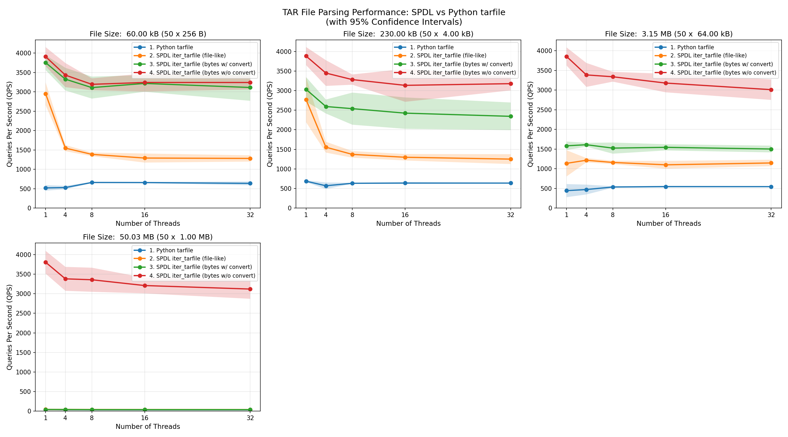
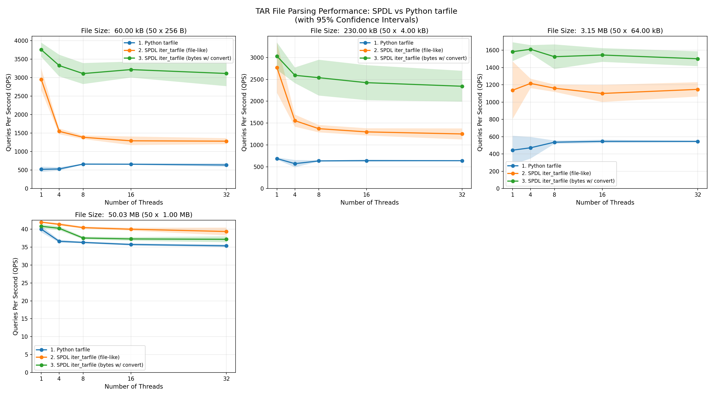

Benchmark tarfile¶
Benchmark script for iter_tarfile function.
This script benchmarks the performance of spdl.io.iter_tarfile() against
Python’s built-in tarfile module using multi-threading.
Two types of inputs are tested for spdl.io.iter_tarfile().
Byte string and a file-like object returns byte string by chunk.
The benchmark:
Creates test tar archives with various numbers of files
Runs both implementations with different thread counts
Measures queries per second (QPS) for each configuration
Plots the results comparing the three implementations
Example
$ numactl --membind 0 --cpubind 0 python benchmark_tarfile.py --output iter_tarfile_benchmark_results.csv
# Plot results
$ python plot_tar_benchmark.py --input iter_tarfile_benchmark_results.csv --output wav_benchmark_plot.png
# Plot results without load_wav
$ python plot_tar_benchmark.py --input iter_tarfile_benchmark_results.csv --output wav_benchmark_plot_2.png --filter '4. SPDL iter_tarfile (bytes w/o convert)'
Result
The following plot shows the QPS (measured by the number of files processed) of each functions with different file size.
 The spdl.io.iter_tarfile() function processes data fastest when the input is a byte
string.
Its performance is consistent across different file sizes.
This is because, when the entire TAR file is loaded into memory as a contiguous array,
the function only needs to read the header and return the address of the corresponding data
(note that iter_tarfile() returns a memory view when the input is a byte
string).
Since reading the header is very fast, most of the time is spent creating memory view objects
while holding the GIL (Global Interpreter Lock).
As a result, the speed of loading files decreases as more threads are used.
When the input data type is switched from a byte string to a file-like object,
the performance of spdl.io.iter_tarfile() is also affected by the size of
the input data.
This is because data is processed incrementally, and for each file in the TAR archive,
a new byte string object is created.
The implementation tries to request the exact amount of bytes needed, but file-like objects
do not guarantee that they return the requested length,
instead, they return at most the requested number of bytes.
Therefore, many intermediate byte string objects must be created.
As the file size grows, it takes longer to process the data.
Since the GIL must be locked while byte strings are created,
performance degrades as more threads are used.
At some point, the performance becomes similar to Python’s built-in tarfile module,
which is a pure-Python implementation and thus holds the GIL almost entirely.
Source¶
Source
Click here to see the source.
1#!/usr/bin/env python3
2# Copyright (c) Meta Platforms, Inc. and affiliates.
3# All rights reserved.
4#
5# This source code is licensed under the BSD-style license found in the
6# LICENSE file in the root directory of this source tree.
7
8# pyre-unsafe
9
10"""Benchmark script for iter_tarfile function.
11
12This script benchmarks the performance of :py:func:`spdl.io.iter_tarfile` against
13Python's built-in ``tarfile`` module using multi-threading.
14Two types of inputs are tested for :py:func:`spdl.io.iter_tarfile`.
15Byte string and a file-like object returns byte string by chunk.
16
17The benchmark:
18
191. Creates test tar archives with various numbers of files
202. Runs both implementations with different thread counts
213. Measures queries per second (QPS) for each configuration
224. Plots the results comparing the three implementations
23
24**Example**
25
26.. code-block:: shell
27
28 $ numactl --membind 0 --cpubind 0 python benchmark_tarfile.py --output iter_tarfile_benchmark_results.csv
29 # Plot results
30 $ python plot_tar_benchmark.py --input iter_tarfile_benchmark_results.csv --output wav_benchmark_plot.png
31 # Plot results without load_wav
32 $ python plot_tar_benchmark.py --input iter_tarfile_benchmark_results.csv --output wav_benchmark_plot_2.png --filter '4. SPDL iter_tarfile (bytes w/o convert)'
33
34**Result**
35
36The following plot shows the QPS (measured by the number of files processed) of each
37functions with different file size.
38
39.. image:: ../../_static/data/example_benchmark_tarfile.png
40
41.. image:: ../../_static/data/example_benchmark_tarfile_2.png
42
43The :py:func:`spdl.io.iter_tarfile` function processes data fastest when the input is a byte
44string.
45Its performance is consistent across different file sizes.
46This is because, when the entire TAR file is loaded into memory as a contiguous array,
47the function only needs to read the header and return the address of the corresponding data
48(note that :py:func:`~spdl.io.iter_tarfile` returns a memory view when the input is a byte
49string).
50Since reading the header is very fast, most of the time is spent creating memory view objects
51while holding the GIL (Global Interpreter Lock).
52As a result, the speed of loading files decreases as more threads are used.
53
54When the input data type is switched from a byte string to a file-like object,
55the performance of :py:func:`spdl.io.iter_tarfile` is also affected by the size of
56the input data.
57This is because data is processed incrementally, and for each file in the TAR archive,
58a new byte string object is created.
59The implementation tries to request the exact amount of bytes needed, but file-like objects
60do not guarantee that they return the requested length,
61instead, they return at most the requested number of bytes.
62Therefore, many intermediate byte string objects must be created.
63As the file size grows, it takes longer to process the data.
64Since the GIL must be locked while byte strings are created,
65performance degrades as more threads are used.
66At some point, the performance becomes similar to Python's built-in ``tarfile`` module,
67which is a pure-Python implementation and thus holds the GIL almost entirely.
68"""
69
70__all__ = [
71 "BenchmarkResult",
72 "benchmark",
73 "create_test_tar",
74 "iter_tarfile_builtin",
75 "main",
76 "save_results_to_csv",
77 "process_tar_builtin",
78 "process_tar_spdl",
79 "process_tar_spdl_filelike",
80 "run_benchmark",
81]
82
83import argparse
84import csv
85import io
86import logging
87import sys
88import tarfile
89import time
90from collections.abc import Callable, Iterator
91from concurrent.futures import as_completed, ThreadPoolExecutor
92from dataclasses import dataclass
93from functools import partial
94
95import numpy as np
96import spdl.io
97
98_LG = logging.getLogger(__name__)
99
100
101def _get_python_info() -> tuple[str, bool]:
102 """Get Python version and free-threaded ABI information.
103
104 Returns:
105 Tuple of (python_version, is_free_threaded)
106 """
107 python_version = (
108 f"{sys.version_info.major}.{sys.version_info.minor}.{sys.version_info.micro}"
109 )
110 # Check if Python is running with free-threaded ABI (PEP 703)
111 # _is_gil_enabled is only available in Python 3.13+
112 try:
113 is_free_threaded = sys._is_gil_enabled() # pyre-ignore[16]
114 except AttributeError:
115 is_free_threaded = False
116 return python_version, is_free_threaded
117
118
119def iter_tarfile_builtin(tar_data: bytes) -> Iterator[tuple[str, bytes]]:
120 """Iterate over TAR file using Python's built-in ``tarfile`` module.
121
122 Args:
123 tar_data: TAR archive as bytes.
124
125 Yields:
126 Tuple of ``(filename, content)`` for each file in the archive.
127 """
128 with tarfile.open(fileobj=io.BytesIO(tar_data), mode="r") as tar:
129 for member in tar.getmembers():
130 if member.isfile():
131 file_obj = tar.extractfile(member)
132 if file_obj:
133 content = file_obj.read()
134 yield member.name, content
135
136
137def process_tar_spdl(tar_data: bytes, convert: bool) -> int:
138 """Process TAR archive using :py:func:`spdl.io.iter_tarfile`.
139
140 Args:
141 tar_data: TAR archive as bytes.
142
143 Returns:
144 Number of files processed.
145 """
146 count = 0
147 if convert:
148 for _, content in spdl.io.iter_tarfile(tar_data):
149 bytes(content)
150 count += 1
151 return count
152 else:
153 for _ in spdl.io.iter_tarfile(tar_data):
154 count += 1
155 return count
156
157
158def process_tar_builtin(tar_data: bytes) -> int:
159 """Process TAR archive using Python's built-in ``tarfile`` module.
160
161 Args:
162 tar_data: TAR archive as bytes.
163
164 Returns:
165 Number of files processed.
166 """
167 count = 0
168 for _ in iter_tarfile_builtin(tar_data):
169 count += 1
170 return count
171
172
173def process_tar_spdl_filelike(tar_data: bytes) -> int:
174 """Process TAR archive using :py:func:`spdl.io.iter_tarfile` with file-like object.
175
176 Args:
177 tar_data: TAR archive as bytes.
178
179 Returns:
180 Number of files processed.
181 """
182 count = 0
183 file_like = io.BytesIO(tar_data)
184 for _ in spdl.io.iter_tarfile(file_like): # pyre-ignore[6]
185 count += 1
186 return count
187
188
189def benchmark(
190 func,
191 tar_data: bytes,
192 num_iterations: int,
193 num_threads: int,
194 num_runs: int = 5,
195) -> tuple[int, float, float, float]:
196 """Benchmark function with specified number of threads.
197
198 Runs multiple benchmark iterations and calculates 95% confidence intervals.
199
200 Args:
201 func: Function to benchmark (e.g., ``process_tar_spdl`` or ``process_tar_builtin``).
202 tar_data: TAR archive as bytes.
203 num_iterations: Number of iterations to run per benchmark run.
204 num_threads: Number of threads to use.
205 num_runs: Number of benchmark runs to perform for confidence interval calculation.
206 Defaults to 5.
207
208 Returns:
209 Tuple of ``(total_files_processed, qps_mean, qps_lower_ci, qps_upper_ci)``.
210 """
211 qps_samples = []
212 last_total_count = 0
213
214 with ThreadPoolExecutor(max_workers=num_threads) as exe:
215 # Warm-up phase: run a few iterations to warm up the executor
216 warmup_futures = [exe.submit(func, tar_data) for _ in range(10 * num_threads)]
217 for future in as_completed(warmup_futures):
218 _ = future.result()
219
220 # Run multiple benchmark iterations
221 for _ in range(num_runs):
222 t0 = time.monotonic()
223 futures = [exe.submit(func, tar_data) for _ in range(num_iterations)]
224 total_count = 0
225 for future in as_completed(futures):
226 total_count += future.result()
227 elapsed = time.monotonic() - t0
228
229 qps = num_iterations / elapsed
230 qps_samples.append(qps)
231 last_total_count = total_count
232
233 # Calculate mean and 95% confidence interval
234 qps_mean = sum(qps_samples) / len(qps_samples)
235 qps_std = np.std(qps_samples, ddof=1)
236 # Using t-distribution critical value for 95% CI
237 # For small samples (n=5), t-value ≈ 2.776
238 t_value = 2.776 if num_runs == 5 else 2.0
239 margin = t_value * qps_std / (num_runs**0.5)
240 qps_lower_ci = qps_mean - margin
241 qps_upper_ci = qps_mean + margin
242
243 return last_total_count, qps_mean, qps_lower_ci, qps_upper_ci
244
245
246def _size_str(n: int) -> str:
247 if n < 1024:
248 return f"{n} B"
249 if n < 1024 * 1024:
250 return f"{n / 1024: .2f} kB"
251 if n < 1024 * 1024 * 1024:
252 return f"{n / (1024 * 1024): .2f} MB"
253 return f"{n / (1024 * 1024 * 1024): .2f} GB"
254
255
256@dataclass
257class BenchmarkResult:
258 """Single benchmark result for a specific configuration."""
259
260 function_name: str
261 "Name of the function being benchmarked."
262 tar_size: int
263 "Size of the TAR archive in bytes."
264 file_size: int
265 "Size of each file in the TAR archive in bytes."
266 num_files: int
267 "Number of files in the TAR archive."
268 num_threads: int
269 "Number of threads used for this benchmark."
270 num_iterations: int
271 "Number of iterations performed."
272 qps_mean: float
273 "Mean queries per second (QPS)."
274 qps_lower_ci: float
275 "Lower bound of 95% confidence interval for QPS."
276 qps_upper_ci: float
277 "Upper bound of 95% confidence interval for QPS."
278 total_files_processed: int
279 "Total number of files processed during the benchmark."
280 python_version: str
281 "Python version used for the benchmark."
282 free_threaded: bool
283 "Whether Python is running with free-threaded ABI (PEP 703)."
284
285
286def create_test_tar(num_files: int, file_size: int) -> bytes:
287 """Create a TAR archive in memory with specified number of files.
288
289 Args:
290 num_files: Number of files to include in the archive.
291 file_size: Size of each file in bytes.
292
293 Returns:
294 TAR archive as bytes.
295 """
296 tar_buffer = io.BytesIO()
297 with tarfile.open(fileobj=tar_buffer, mode="w") as tar:
298 for i in range(num_files):
299 filename = f"file_{i:06d}.txt"
300 content = b"1" * file_size
301 info = tarfile.TarInfo(name=filename)
302 info.size = len(content)
303 tar.addfile(info, io.BytesIO(content))
304 tar_buffer.seek(0)
305 return tar_buffer.getvalue()
306
307
308def run_benchmark(
309 configs: list[tuple[str, Callable[[bytes], int]]],
310 num_files: int,
311 file_sizes: list[int],
312 num_iterations: int,
313 thread_counts: list[int],
314 num_runs: int = 5,
315) -> list[BenchmarkResult]:
316 """Run benchmark comparing SPDL and built-in implementations.
317
318 Tests both :py:func:`spdl.io.iter_tarfile` (with bytes and file-like inputs)
319 and Python's built-in ``tarfile`` module.
320
321 Args:
322 num_files: Number of files in the test TAR archive.
323 file_sizes: List of file sizes to test (in bytes).
324 num_iterations: Number of iterations for each thread count.
325 thread_counts: List of thread counts to test.
326 num_runs: Number of runs to perform for confidence interval calculation.
327 Defaults to 5.
328
329 Returns:
330 List of :py:class:`BenchmarkResult`, one for each configuration tested.
331 """
332
333 results: list[BenchmarkResult] = []
334
335 for file_size in file_sizes:
336 for func_name, func in configs:
337 tar_data = create_test_tar(num_files, file_size)
338 _LG.info(
339 "TAR size: %s (%d x %s), '%s'",
340 _size_str(len(tar_data)),
341 num_files,
342 _size_str(file_size),
343 func_name,
344 )
345
346 for num_threads in thread_counts:
347 total_count, qps_mean, qps_lower_ci, qps_upper_ci = benchmark(
348 func, tar_data, num_iterations, num_threads, num_runs
349 )
350
351 margin = (qps_upper_ci - qps_lower_ci) / 2
352 _LG.info(
353 " Threads: %2d QPS: %8.2f ± %.2f (%.2f-%.2f, %d runs, %d files)",
354 num_threads,
355 qps_mean,
356 margin,
357 qps_lower_ci,
358 qps_upper_ci,
359 num_runs,
360 total_count,
361 )
362
363 python_version, free_threaded = _get_python_info()
364 results.append(
365 BenchmarkResult(
366 function_name=func_name,
367 tar_size=len(tar_data),
368 file_size=file_size,
369 num_files=num_files,
370 num_threads=num_threads,
371 num_iterations=num_iterations,
372 qps_mean=qps_mean,
373 qps_lower_ci=qps_lower_ci,
374 qps_upper_ci=qps_upper_ci,
375 total_files_processed=total_count,
376 python_version=python_version,
377 free_threaded=free_threaded,
378 )
379 )
380
381 return results
382
383
384def save_results_to_csv(
385 results: list[BenchmarkResult],
386 output_file: str = "benchmark_tarfile_results.csv",
387) -> None:
388 """Save benchmark results to a CSV file that Excel can open.
389
390 Args:
391 results: List of BenchmarkResult objects containing benchmark data
392 output_file: Output file path for the CSV file
393 """
394 with open(output_file, "w", newline="") as csvfile:
395 fieldnames = [
396 "function_name",
397 "tar_size",
398 "file_size",
399 "num_files",
400 "num_threads",
401 "num_iterations",
402 "qps_mean",
403 "qps_lower_ci",
404 "qps_upper_ci",
405 "total_files_processed",
406 "python_version",
407 "free_threaded",
408 ]
409 writer = csv.DictWriter(csvfile, fieldnames=fieldnames)
410
411 writer.writeheader()
412 for r in results:
413 writer.writerow(
414 {
415 "function_name": r.function_name,
416 "tar_size": r.tar_size,
417 "file_size": r.file_size,
418 "num_files": r.num_files,
419 "num_threads": r.num_threads,
420 "num_iterations": r.num_iterations,
421 "qps_mean": r.qps_mean,
422 "qps_lower_ci": r.qps_lower_ci,
423 "qps_upper_ci": r.qps_upper_ci,
424 "total_files_processed": r.total_files_processed,
425 "python_version": r.python_version,
426 "free_threaded": r.free_threaded,
427 }
428 )
429 _LG.info("Results saved to %s", output_file)
430
431
432def _parse_args() -> argparse.Namespace:
433 parser = argparse.ArgumentParser(
434 description="Benchmark iter_tarfile performance with multi-threading"
435 )
436 parser.add_argument(
437 "--num-files",
438 type=int,
439 default=100,
440 help="Number of files in the test TAR archive",
441 )
442 parser.add_argument(
443 "--num-iterations",
444 type=int,
445 default=100,
446 help="Number of iterations for each thread count",
447 )
448 parser.add_argument(
449 "--output",
450 type=str,
451 default="iter_tarfile_benchmark_results.csv",
452 help="Output path for the results",
453 )
454 parser.add_argument(
455 "--log-level",
456 type=str,
457 default="INFO",
458 choices=["DEBUG", "INFO", "WARNING", "ERROR"],
459 help="Logging level",
460 )
461
462 return parser.parse_args()
463
464
465def main() -> None:
466 """Main entry point for the benchmark script.
467
468 Parses command-line arguments, runs benchmarks, and generates plots.
469 """
470
471 args = _parse_args()
472
473 logging.basicConfig(
474 level=getattr(logging, args.log_level),
475 format="%(asctime)s [%(levelname).1s]: %(message)s",
476 )
477
478 thread_counts = [1, 4, 8, 16, 32]
479 file_sizes = [2**8, 2**12, 2**16, 2**20]
480
481 _LG.info("Starting benchmark with configuration:")
482 _LG.info(" Number of files: %d", args.num_files)
483 _LG.info(" File sizes: %s bytes", file_sizes)
484 _LG.info(" Iterations per thread count: %d", args.num_iterations)
485 _LG.info(" Thread counts: %s", thread_counts)
486
487 configs: list[tuple[str, Callable[[bytes], int]]] = [
488 ("1. Python tarfile", process_tar_builtin),
489 ("2. SPDL iter_tarfile (file-like)", process_tar_spdl_filelike),
490 (
491 "3. SPDL iter_tarfile (bytes w/ convert)",
492 partial(process_tar_spdl, convert=True),
493 ),
494 (
495 "4. SPDL iter_tarfile (bytes w/o convert)",
496 partial(process_tar_spdl, convert=False),
497 ),
498 ]
499
500 results = run_benchmark(
501 configs,
502 num_files=args.num_files,
503 file_sizes=file_sizes,
504 num_iterations=args.num_iterations,
505 thread_counts=thread_counts,
506 )
507
508 # Save results to CSV
509 save_results_to_csv(results, args.output)
510
511 _LG.info(
512 "Benchmark complete. To generate plots, run: "
513 "python plot_tar_benchmark.py --input %s --output %s",
514 args.output,
515 args.output.replace(".csv", ".png"),
516 )
517
518
519if __name__ == "__main__":
520 main()
Functions¶
Functions
- benchmark(func, tar_data: bytes, num_iterations: int, num_threads: int, num_runs: int = 5) tuple[int, float, float, float][source]¶
Benchmark function with specified number of threads.
Runs multiple benchmark iterations and calculates 95% confidence intervals.
- Parameters:
func – Function to benchmark (e.g.,
process_tar_spdlorprocess_tar_builtin).tar_data – TAR archive as bytes.
num_iterations – Number of iterations to run per benchmark run.
num_threads – Number of threads to use.
num_runs – Number of benchmark runs to perform for confidence interval calculation. Defaults to 5.
- Returns:
Tuple of
(total_files_processed, qps_mean, qps_lower_ci, qps_upper_ci).
- create_test_tar(num_files: int, file_size: int) bytes[source]¶
Create a TAR archive in memory with specified number of files.
- Parameters:
num_files – Number of files to include in the archive.
file_size – Size of each file in bytes.
- Returns:
TAR archive as bytes.
- iter_tarfile_builtin(tar_data: bytes) Iterator[tuple[str, bytes]][source]¶
Iterate over TAR file using Python’s built-in
tarfilemodule.- Parameters:
tar_data – TAR archive as bytes.
- Yields:
Tuple of
(filename, content)for each file in the archive.
- main() None[source]¶
Main entry point for the benchmark script.
Parses command-line arguments, runs benchmarks, and generates plots.
- save_results_to_csv(results: list[BenchmarkResult], output_file: str = 'benchmark_tarfile_results.csv') None[source]¶
Save benchmark results to a CSV file that Excel can open.
- Parameters:
results – List of BenchmarkResult objects containing benchmark data
output_file – Output file path for the CSV file
- process_tar_builtin(tar_data: bytes) int[source]¶
Process TAR archive using Python’s built-in
tarfilemodule.- Parameters:
tar_data – TAR archive as bytes.
- Returns:
Number of files processed.
- process_tar_spdl(tar_data: bytes, convert: bool) int[source]¶
Process TAR archive using
spdl.io.iter_tarfile().- Parameters:
tar_data – TAR archive as bytes.
- Returns:
Number of files processed.
- process_tar_spdl_filelike(tar_data: bytes) int[source]¶
Process TAR archive using
spdl.io.iter_tarfile()with file-like object.- Parameters:
tar_data – TAR archive as bytes.
- Returns:
Number of files processed.
- run_benchmark(configs: list[tuple[str, Callable[[bytes], int]]], num_files: int, file_sizes: list[int], num_iterations: int, thread_counts: list[int], num_runs: int = 5) list[BenchmarkResult][source]¶
Run benchmark comparing SPDL and built-in implementations.
Tests both
spdl.io.iter_tarfile()(with bytes and file-like inputs) and Python’s built-intarfilemodule.- Parameters:
num_files – Number of files in the test TAR archive.
file_sizes – List of file sizes to test (in bytes).
num_iterations – Number of iterations for each thread count.
thread_counts – List of thread counts to test.
num_runs – Number of runs to perform for confidence interval calculation. Defaults to 5.
- Returns:
List of
BenchmarkResult, one for each configuration tested.
Classes¶
Classes
- class BenchmarkResult(function_name: str, tar_size: int, file_size: int, num_files: int, num_threads: int, num_iterations: int, qps_mean: float, qps_lower_ci: float, qps_upper_ci: float, total_files_processed: int, python_version: str, free_threaded: bool)[source]¶
Single benchmark result for a specific configuration.